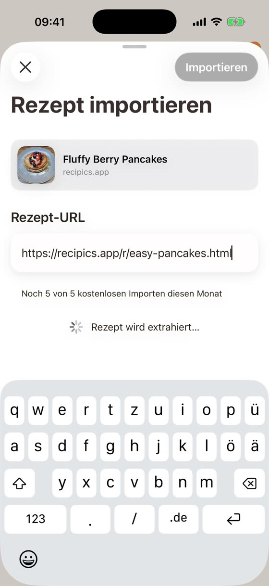

ReciPics
ReciPics
Du findest ein Rezept im Netz und willst es nicht wieder suchen müssen? Kopiere den Link und füge ihn in ReciPics ein. Die App legt das Rezept mit Zutaten und Zubereitungsschritten in deinem Kochbuch ab. So hast du Rezepte von vielen Seiten in einem Kochbuch, statt verstreut in Lesezeichen und Notizen.



Echte Screens aus der App. Beispiel: ein Rezept von unserer eigenen Seite recipics.app.
Füge einen Rezept-Link ein und lies nur das Rezept. Kostenlos, ohne Konto. Wir speichern weder den Link noch das Rezept, und dieses Tool nutzt keine KI. Mehr zu diesem Tool · Datenschutz
Die ReciPics-App funktioniert anders: Sie liest Links mit KI, siehe Datenschutz.
In der App denselben Link einfügen oder über „Teilen“ senden.
Für iPhone mit iOS 26 oder neuer.
Dieses Rezept gehört seinem Autor und der Website, die es veröffentlicht hat. Wir zeigen die Rezeptdaten, die die Seite für Maschinen bereitstellt, einmalig für deinen persönlichen Gebrauch. Den vollständigen Artikel, Fotos und Tipps findest du bei der Quelle.
Wir speichern weder den Link noch das Rezept. Details: Datenschutzerklärung, Abschnitt 12.
Nicht mit der angezeigten Website verbunden. Website-Betreiber oder Autor? Um eine Seite auszuschliessen oder ein Problem zu melden, schreibe an hello@recipics.app (wir handeln innerhalb von 3 Werktagen).
Ohne bezahltes Paket ist die Zahl der Link-Importe pro Monat begrenzt; die App zeigt dir, wie viele noch übrig sind.
Viele Rezept-Websites funktionieren, vor allem solche, deren Rezept ohne Anmeldung sichtbar ist. Das Ergebnis hängt von der Website ab. Am 12.11.2026 haben wir zum Beispiel Rezepte von chefkoch.de, fooby.ch (Deutsch und Englisch) und swissmilk.ch erfolgreich importiert.
Manche Websites lassen den Abruf nicht zu. Dann sagt dir die App das, und du kannst das Rezept stattdessen fotografieren oder als Text einfügen.
Rezept auf Papier? Handgeschriebene Rezepte digitalisieren · Rezepte aus dem Kochbuch scannen
Rezepte aus Instagram oder TikTok: Rezepte von Instagram und TikTok speichern
Rezepte aus Links, Reels und Fotos sammeln? Rezepte sammeln in einer App
Nur ein Rezept lesen? Rezept aus Link · Andere Mengen gebraucht? Rezept umrechnen
Für neue Nutzer ohne bezahltes Paket ist die Zahl der Link-Importe pro Monat begrenzt. Die App zeigt dir, wie viele noch übrig sind.
ReciPics ist nicht mit Chefkoch, FOOBY (Migros) oder Swissmilk verbunden. Wir nennen die Namen nur, um zu zeigen, welche Seiten wir getestet haben. Rezepte, Texte und Bilder sind urheberrechtlich geschützt und gehören ihren Urhebern bzw. den Websites. Nutze ReciPics nur für dein privates Kochbuch und veröffentliche importierte Inhalte nicht weiter.
ReciPics im App StoreFür iPhone mit iOS 26 oder neuer.